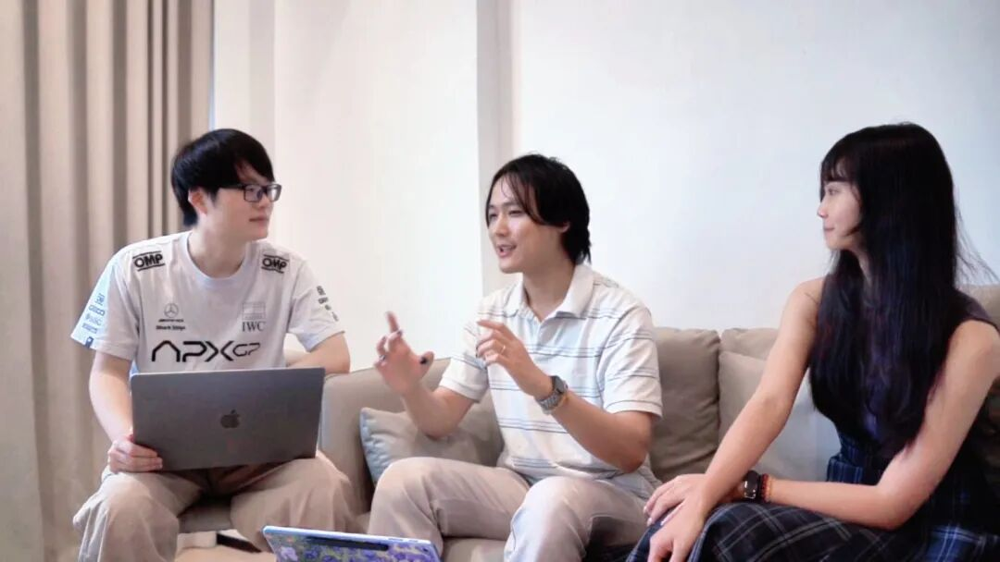

多模态大模型集成与设备端 MCP 工具
🎙️ 展开直播口播导语（讲师版）
“如果大模型只能在屏幕聊天框里陪你打字，那它不过是一个昂贵的统计学文字玩具；但如果给大模型插上一双‘能看、能走、能表达’的物理手脚，它就是真正能够改造现实世界的具身智能体！最近，Anthropic 主导的 MCP (Model Context Protocol, 模型上下文协议) 彻底引爆了全球 AI 圈。你知道吗？VBOT 官方在底座设计中，早已为端侧 MCP 与 Agent Harness 留好了原生接口！今天这节课，我们就手把手带你在计算主板上拉起一个高性能的 18080 MCP 工具服务器，让 Cursor、Claude Code 或者任何大模型智能体，直接像调用本地函数一样操纵这台钢铁猛兽！”
本课学习目标
- 复述头部四麦克风阵列的三条音频入口，以及原始音频流所需的
--consent授权 - 用 OpenWakeWord / Sherpa-ONNX 热替换唤醒词，再接 SenseVoice / Whisper 完成流式识别
- 按“1 帧/秒 + 结构化 JSON”设计 VLM 决策，避免把 30fps 全量视频喂给云端
- 在 18080 挂载 MCP 服务，暴露行走、表情、抓帧三个具身工具
- 面对“无匹配工具”时正确降级，并守住 18080 / 8787 的内网边界
多模态全链路总览：从一句话到一次动作
这条链路把声音、画面和动作串成闭环：头部四麦克风阵列先“听见”，唤醒后由 ASR 把语音转成文本；VLM 结合相机画面理解现场并做出决策；决策被编译成标准的 MCP 工具调用，最终由 RCP 与运控系统落成物理动作。
OpenWakeWord
Sherpa-ONNX
识别文本入 LLM
决策 1fps 抽帧 + 语音
JSON 工具调用
18080/mcpJSON-RPC 2.0
语音播报

一、板载音频链路与自定义唤醒词
机器狗头部集成了四麦克风阵列与降噪算法。官方底座把音频能力拆成三条入口，分别对应“原始音频、识别文本、语音播报”三种用法：
| 入口 / 话题 | 能力 | 使用要点 |
|---|---|---|
/raw_audio_dump |
原始音频流 | 需用户显式传递 --consent 权限，未获授权不要截流 |
/speech/asr_result |
板载识别文本 | 实时输出 ASR 识别出的文字，可直接作为 LLM 的文本输入 |
| 音频节点 | 语音播报服务 | 直接投递 WAV / PCM 音频包，播放语音反馈 |
/raw_audio_dump 必须由用户显式传入 --consent。没有拿到授权时，优先使用 /speech/asr_result 的识别文本，而不是在后台偷偷截流麦克风原始数据。唤醒词热替换与离线语音栈
黑客松实战中（如“聆灵陪诊”“伽伽狗”），选手们通常会旁路系统内置唤醒词，构建独立的语音闭环：
- 音频流截流在后台启动轻量 Python 节点监听麦克风流；
- 轻量语音唤醒接入 OpenWakeWord 或 Sherpa-ONNX，加载专属唤醒词模型（如唤醒“小安”或“聆灵”）；
- 流式语音识别唤醒后启动阿里 SenseVoice 或 OpenAI Whisper 进行高精度语音转文字，随后注入 LLM。

这条路线不改系统内置的唤醒逻辑，而是在外部重建一套“唤醒 + ASR”闭环：唤醒词模型决定“什么时候开始听”，ASR 决定“听到了什么”，两者都把结果以文本形式交给 LLM，后续决策链路与板载语音入口完全一致。
二、VLM 视觉认知决策流水线
传统机器人只知道“前方 0.8 米有障碍物”，而搭载视觉大模型的机器狗知道“地上有一双散落的瑜伽袜，或者有一位老人摔倒需要呼救”。差别不在于相机分辨率，而在于决策层能不能把画面、语音与设备能力放在同一个上下文里理解。
双输入决策链
前端实拍画面
1fps
四麦 + 降噪
转写文本
GPT-4o / Qwen2-VL
输出 tool_name 与 arguments
192.168.127.2:18080/mcp决策设计准则
| 准则 | 做法 | 为什么 |
|---|---|---|
| 抽帧降频 | 通常以 1 帧/秒 抽帧；或在检测到用户提问时按需触发单帧截取 | 不要把 30fps 全量视频喂给云端 VLM，延迟与 Token 成本不可接受 |
| 结构化输出 | 强制大模型以 JSON 格式输出 tool_name 与 arguments |
让决策可以直接映射为 MCP 的 tools/call 参数，避免自由文本解析歧义 |
三、设备端 MCP 工具服务：把能力暴露给任意 Agent
Anthropic 提出的 MCP (Model Context Protocol，模型上下文协议) 已经成为连接 AI 与物理世界的标准接口。通过在机器狗上部署 MCP 服务，任何兼容的大模型（Claude Code、Cursor、AutoGPT 等）都能自然地操纵机器狗。
1. 端口与网络规约
| 用途 | 地址 | 说明 |
|---|---|---|
| MCP 服务统一入口 | http://192.168.127.2:18080/mcp |
所有 MCP 请求走这一个入口，示例服务监听 18080 |
| 设备 Skill 动态注入入口 | http://192.168.127.10:8787/api/skills/{name} |
按 {name} 动态注入设备 Skill |
2. MCP 服务调用时序
外部 Agent 不直接碰设备接口，而是通过 18080 的 MCP 服务完成“发现工具 → 调用工具 → 收取回执”三步：
POST /mcp · tools/list→tools/call · name + arguments→result.content 文本回执注意：示例代码中行走分支仍以 time.sleep(0.1) 模拟，并留下 TODO——实际执行需调用 /vel_cmd 发布器做 20Hz 连续投递。时序图里的“设备能力”在示例中先以日志与文本回执代替。
3. 对外暴露的三个具身工具
| 工具名 | 能力 | 关键参数（* 为 required） |
|---|---|---|
vbot_locomotion_walk |
驱动机器狗以指定线速度平稳移动一段指定时间，支持前后与转向 | linear_x*：前进线速度（m/s），建议范围 -0.3 ~ 0.5angular_z：旋转角速度（rad/s），正值为左转，负值为右转duration*：持续秒数，范围 (0.5, 10.0] |
vbot_set_emotion |
在头部 LCD 屏幕上渲染预设表情，并伴随耳灯 RGB 呼吸效果 | emotion*：happy / wink / surprised / confused / sad / neutral |
vbot_capture_environment |
抓取当前双目相机前端的一帧高清实拍画面，供多模态视觉大模型做空间分析 | camera_select：left / right，默认 left |
4. 生产级 MCP 工具服务端示例
下面这份 vbot_mcp_service.py 照录源文档：用 FastAPI 暴露 /mcp 单入口，tools/list 返回工具清单，tools/call 按工具名分发执行，最后以 uvicorn 绑定板载内网 18080。
#!/usr/bin/env python3
# -*- coding: utf-8 -*-
"""
VBOT 设备端生产级 MCP (Model Context Protocol) 核心服务
运行端口：18080
"""
from fastapi import FastAPI, Request
import uvicorn
import time
app = FastAPI(title="VBOT Embodied MCP Gateway", version="1.6.0")
# 声明向大模型暴露的具身工具清单
TOOLS_CATALOG = [
{
"name": "vbot_locomotion_walk",
"description": "驱动机器狗以指定线速度平稳移动一段指定时间，支持前后与转向",
"inputSchema": {
"type": "object",
"properties": {
"linear_x": {"type": "number", "description": "前进线速度 (m/s)，建议范围 -0.3 ~ 0.5"},
"angular_z": {"type": "number", "description": "旋转角速度 (rad/s)，正值为左转，负值为右转"},
"duration": {"type": "number", "description": "持续秒数，范围 (0.5, 10.0]"}
},
"required": ["linear_x", "duration"]
}
},
{
"name": "vbot_set_emotion",
"description": "在头部 LCD 屏幕上渲染预设表情，并伴随耳灯 RGB 呼吸效果",
"inputSchema": {
"type": "object",
"properties": {
"emotion": {
"type": "string",
"enum": ["happy", "wink", "surprised", "confused", "sad", "neutral"],
"description": "表情类型"
}
},
"required": ["emotion"]
}
},
{
"name": "vbot_capture_environment",
"description": "抓取当前双目相机前端的一帧高清实拍画面，供多模态视觉大模型做空间分析",
"inputSchema": {
"type": "object",
"properties": {
"camera_select": {"type": "string", "enum": ["left", "right"], "default": "left"}
}
}
}
]
@app.post("/mcp")
async def handle_mcp_request(request: Request):
payload = await request.json()
rpc_method = payload.get("method")
call_id = payload.get("id")
params = payload.get("params", {})
# 1. 响应工具清单查询
if rpc_method == "tools/list":
return {
"jsonrpc": "2.0",
"id": call_id,
"result": {"tools": TOOLS_CATALOG}
}
# 2. 响应具体工具执行
elif rpc_method == "tools/call":
tool_name = params.get("name")
args = params.get("arguments", {})
if tool_name == "vbot_locomotion_walk":
vx = float(args.get("linear_x", 0.0))
wz = float(args.get("angular_z", 0.0))
dur = float(args.get("duration", 1.0))
print(f"🐾 [MCP 运控] 收到行走指令: vx={vx}m/s, wz={wz}rad/s, 持续={dur}s")
# TODO: 实际代码中调用 /vel_cmd 发布器执行 20Hz 连续投递
time.sleep(0.1)
return {
"jsonrpc": "2.0",
"id": call_id,
"result": {
"content": [{"type": "text", "text": f"✅ 机器狗成功完成行走: vx={vx}, wz={wz}, 耗时={dur}秒"}]
}
}
elif tool_name == "vbot_set_emotion":
emo = args.get("emotion")
print(f"🐶 [MCP 表情] 切换头部屏幕表情至: {emo}")
return {
"jsonrpc": "2.0",
"id": call_id,
"result": {
"content": [{"type": "text", "text": f"✅ 面部表情与耳灯已成功切换为 {emo}"}]
}
}
elif tool_name == "vbot_capture_environment":
print("📷 [MCP 视觉] 正在抓取一帧现场画面...")
return {
"jsonrpc": "2.0",
"id": call_id,
"result": {
"content": [{"type": "text", "text": "✅ 已捕获当前帧，分辨率 1920x1080，等待视觉模型处理"}]
}
}
else:
return {
"jsonrpc": "2.0",
"id": call_id,
"error": {"code": -32601, "message": f"未找到名为 {tool_name} 的具身工具"}
}
return {"jsonrpc": "2.0", "id": call_id, "error": {"code": -32600, "message": "无效的 RPC 请求"}}
if __name__ == '__main__':
# 绑定在板载内网端口 18080
print("🚀 VBOT MCP 生产级服务正在启动，监听端口 18080...")
uvicorn.run(app, host="0.0.0.0", port=18080)time.sleep(0.1) 并把成功文本返回，真正让机器狗动起来还得把 TODO 换成 /vel_cmd 发布器的 20Hz 连续投递。表情与抓帧分支同样以日志和文本回执演示协议，不要拿“返回 ✅”当成“硬件已动作”。5. 启动与联调边界
把脚本保存为 vbot_mcp_service.py，在计算主板上以脚本入口启动：
python3 vbot_mcp_service.py
# 🚀 VBOT MCP 生产级服务正在启动，监听端口 18080...服务就绪后，把兼容 MCP 的客户端指向 http://192.168.127.2:18080/mcp。它先发 tools/list 拿到三个工具，再按需发 tools/call；服务端返回 JSON-RPC 2.0 的 result.content 或标准错误码（未知工具为 -32601）。
host="0.0.0.0" 监听所有网卡，因此更要守住内网边界：设备入口只能留在内网 192.168.127.2:18080。不要用 frp、反向代理或公网端口映射把 18080 与 8787 暴露出去。🧪 小实验：MCP 工具调用模拟器
真实 Agent 不会“看见一句话就直接动手”，它要先发现工具有哪些，再决定用哪个、传什么参数。下面的模拟器把这条链路拆成四步，工具集严格来自本页服务端暴露的三个具身工具。
让 Agent 自己选工具
点一个场景按钮，观察“理解意图 → 选择工具 → 生成 JSON → 执行结果”的逐步高亮；每步间隔约 300ms。
说明：参数值只是符合 inputSchema 的演示值；真实设备执行仍受 /vel_cmd 发布器与安全策略约束。
工具发现与降级策略
- 先列清单，再调用
tools/list是唯一的能力事实来源；模型不得凭想象拼工具名，也不该把自然语言目标直接当函数名。 - 无匹配就明说工具集里没有对应能力时，明确回复“当前不支持”，不要为了用上工具而硬调行走或表情，更不要伪造一次
tools/call。 - 先拆解，再降级高层目标可以拆成原子工具组合（“去客厅看看”= 行走 + 抓帧）；拆不出来时，转 RCP 动作流或请求人工接管。
- 参数守 schema调用前校验
required、enum与范围，例如duration必须在 (0.5, 10.0] 内、表情只能取六个枚举值。
本课小结
| 层面 | 必须记住的事实 |
|---|---|
| 音频链路 | /raw_audio_dump 需 --consent；/speech/asr_result 是板载 ASR 文本；唤醒可用 OpenWakeWord / Sherpa-ONNX，识别可用 SenseVoice / Whisper |
| VLM 决策 | 1fps 抽帧或按需单帧；强制 JSON 输出 tool_name 与 arguments |
| MCP 服务 | 入口 http://192.168.127.2:18080/mcp；Skill 注入 http://192.168.127.10:8787/api/skills/{name}；三工具 walk / emotion / capture |
| 安全边界 | 18080 与 8787 仅留内网，严禁 frp 或公网穿透；示例里的 /vel_cmd 仍是 TODO，上线前必须接真实运控 |
- 语音链路先唤醒后 ASR，原始音频必须拿到
--consent - MCP 先
tools/list再tools/call，无匹配工具不硬调 - “返回 ✅”不等于“硬件已动作”，运控发布器要自己接上